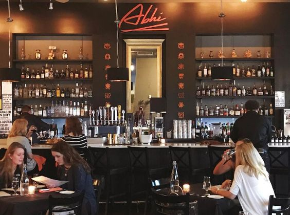
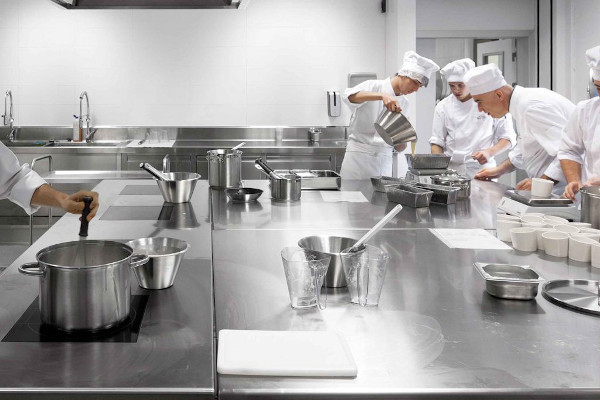
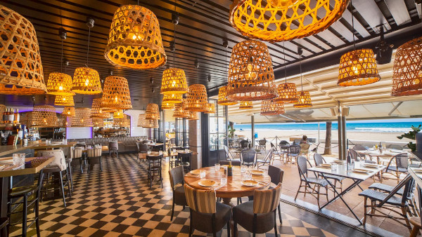
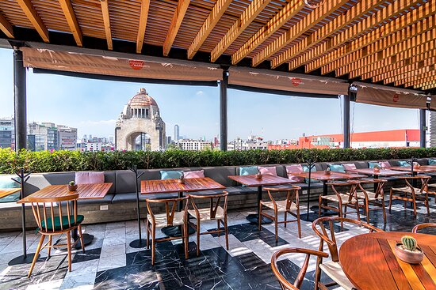
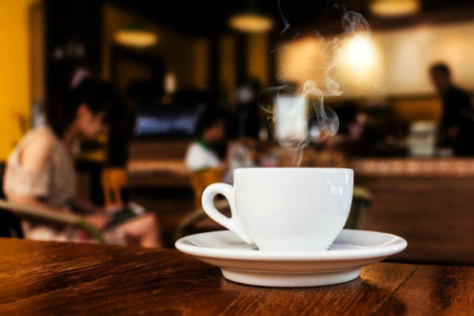

Tu punto de encuentro desde 2022

Nuestra cocina permanece abierta de manera ininterrumpida, por lo que podemos prepararte un desayuno a la hora de la cena o una cena a la hora del desayuno. 
La Cafetería Abhi nació de la mano de Abhijeet Singh en el noviembre de 2022..Un espacio de múltiples caras y registros, con un público de lo más variopinta, culto y divertido. Todo es exageración y creatividad, atrevimiento, irreverencia, serenidad y pasión. Una experiencia embriagadora.

En la Cafetería Abhi somos un gran equipo de gente profesional dispuesto a darte el mejor servicio.

¡Caminamos hacia la inclusión! Hemos adaptado nuestra carta al braille y establecido un protocolo para que nuestros camareros y el personal de cocina sepan atender de la mejor manera a las personas ciegas.
